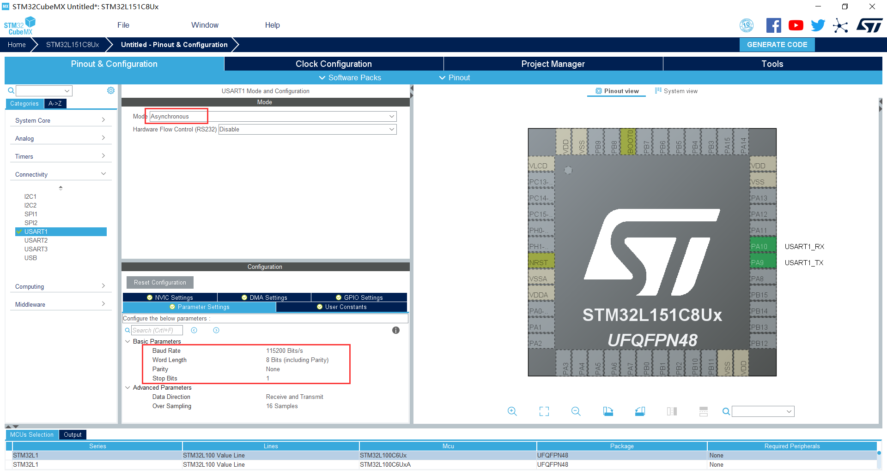
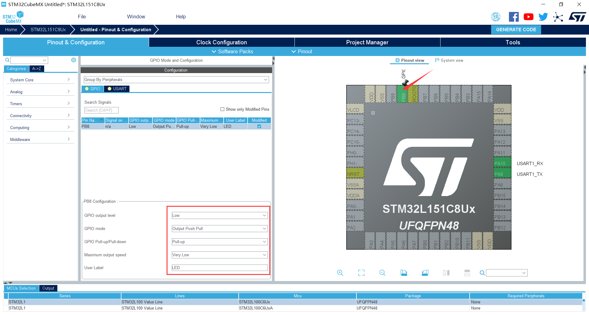
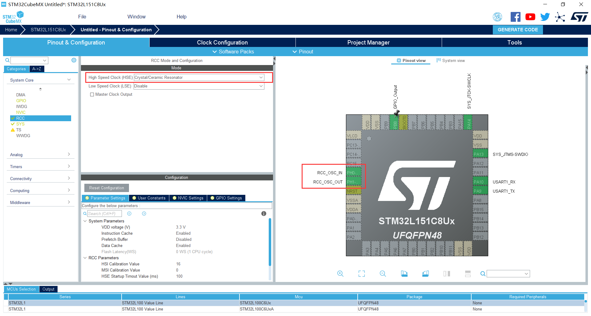
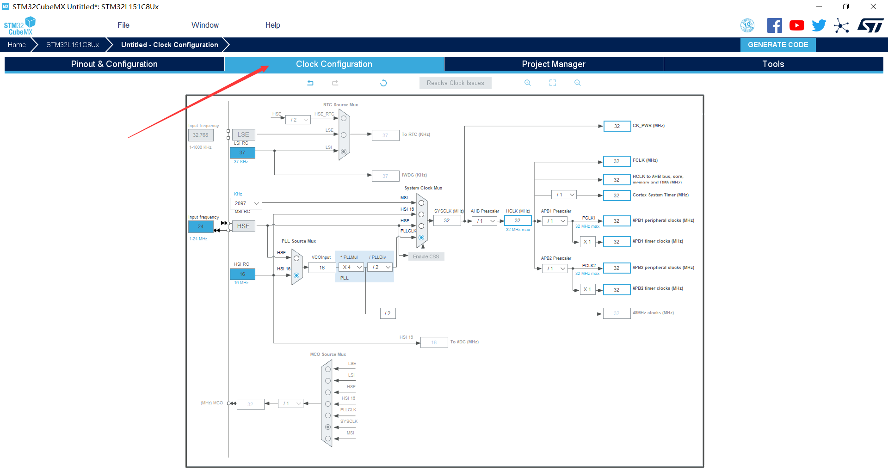
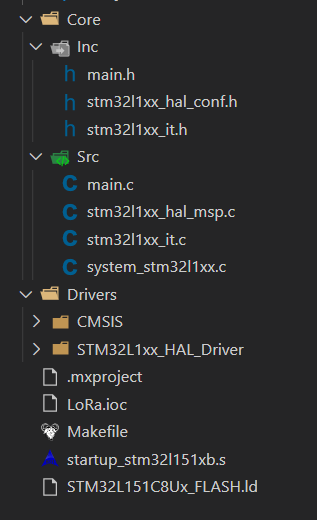
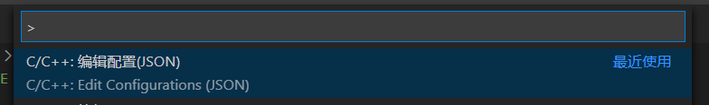
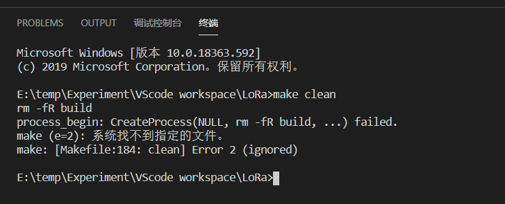
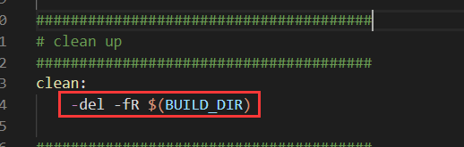
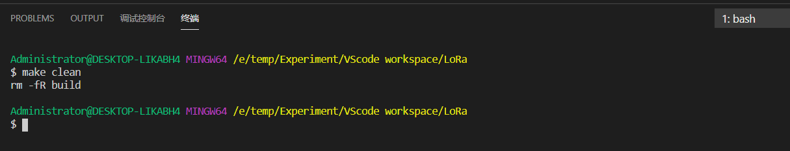

# 程序安装
1、VSCode：https://code.visualstudio.com/Download
好用到爆的文本编辑器，配合强大的插件，使你的开发效率大大提高。
2、Java：https://www.java.com/zh-CN/download/
STM32CubeMX 的安装需要 JAVA 运行环境（jre）。
3、STM32CubeMX：https://my.st.com/content/my_st_com/en/products/development-tools/software-development-tools/stm32-software-development-tools/stm32-configurators-and-code-generators/stm32cubemx.html
支持最新的 HAL 库及 LL 库，工程代码配置与生成工具，支持生成 IAR、Keil、STM32CubeIDE、Makefile 等工程，这里使用其生成的 Makefile 工程。
4、MinGW-w64：https://sourceforge.net/projects/mingw-w64/files/mingw-w64/mingw-w64-release/
一个强大并实用的 C/C++ 编译器。安装完成后需要添加系统环境变量，可以利用 cmd 命令：gcc -v 测试。
5、arm-none-eabi-gcc：https://launchpad.net/gcc-arm-embedded/+download
GUN 的 arm 的通用交叉编译链工具，基本上常用的 arm 处理器均支持。同样的，安装完成后需要添加系统环境变量，可以利用 cmd 命令：arm-none-eabi-gcc -v 测试。
# CubeMX 工程生成
目前 STM32 现在主推的库是 HAL 库，当然还有个 LL 库用于操作底层寄存器；对于 HAL 库，官方专门推出了图形化软件 CubeMX 来简化 HAL 库下 STM32 的初始化代码；我们只需要配置好相应的外设功能以及时钟树，点击生成代码，CubeMX 便会生成相应工程文件，并且还支持多种 IDE 工具，实乃居家旅行出门必备啊。咳，偏题！
首先，选择你的目标芯片，启动工程配置，这里就简单的弄个 LED 控制跟 DEBUG 配置。
串口配置就像下图那样，像我们平常一样，异步通讯，Baud rate:115200、8Bit、1Stop Bit

接着就配置 LED IO 引脚，直接点击对应引脚进行配置，如下图所示：

这软件怎么用在这里就不多赘述了，还有就是稍微注意一下：
如果要使用 STLink 等在线调试器，那么需要在下图的指示处选择你所需要调试方式：

对于时钟树，像我们一般是有使用 HSE 高速外部晶振，那么你就需要在 RCC 那里打开相应的配置：

接着在时钟配置那里配置相应的外设时钟：

最后，由于我们是想要在 VSCode 上开发，就直接选择生成 Makefile 就可以了。需要特别说明的是，这一步并不是必须的，完全可以不用 CubeMX，自己写 Makefile 也是可以的。然后输出生成工程文件。

# VSCode 环境部署
1、插件安装
| 插件 | 功能 |
|---|---|
| Chinese (Simplified) Language Pack for Visual Studio Code | 中文（简体）语言包 |
| Comment Translate | VSCode 注释翻译 |
| C/C++ | C / C ++ 的语言支持，语法智能感知、加亮及调试功能，当然需要系统安装 arm-none-eabi-gcc 编译器 |
| Cortex Debug | 提供 jlink、stlink 等调试接口功能 |
| ARM | arm 汇编语言支持 |
| vscode-icons | 文件图标，可快速查看文件类型 |
2、配置 VS Code
首先，把从 STM32CubeMX 创建出来的工程导入到 VS Code 里面，得到：

默认情况下，工程中是不含 .vscode 的文件夹的，通过操作以下三种方式时会自动创建：
打开命令窗口进行编辑配置（Ctrl+Shitf+P > Edit Configurations (JSON)）

或点击窗口栏的 终端 -> 配置任务 -> 使用模板创建 task.json -> Other

或修改工作区里的 settings.json 文件（窗口 File--Preferences--Settings--Features--Terminal 的 Terminal > Integrated > Automation Shell: Windows 栏中进行编辑）

这三个创建出来的效果如下：

先说前面两个文件：
- c_cpp_properties.json
主要有添加 include 路径，编译器路径，宏定义等；设置好后，索引、编译就跟 keil 一样方便。然后，它的配置修改如下：
{ | |
"configurations": [ | |
{ | |
"name": "STM32", // 创建一个名为 "STM32" 的配置 | |
"includePath": [ // 声明这个工作区的 C/C++ 工程包含了哪些头文件目录 | |
"${workspaceFolder}/**", | |
"${workspaceFolder}/Drivers/CMSIS/Device/ST/STM32L1xx/Include", | |
"${workspaceFolder}/Drivers/CMSIS/Include", | |
"${workspaceFolder}/Drivers/STM32L1xx_HAL_Driver/Inc", | |
"${workspaceFolder}/Drivers/STM32L1xx_HAL_Driver/Inc/Legacy", | |
"${workspaceFolder}/Core/Inc" | |
], | |
"defines": [ // 全局的预处理宏定义 | |
"STM32L151xB", | |
"USE_HAL_DRIVER" | |
], | |
"compilerPath": "gcc.exe", // 如果添加了环境变量，可以像这样表示；否则就得加绝对路径，如：C:\\Program Files\\mingw64\\bin\\gcc.exe | |
"cStandard": "c11", // 使用的 C 标准 | |
"cppStandard": "c++17", // 使用的 C++ 标准 | |
"intelliSenseMode": "gcc-x64" // 语言风格 | |
} | |
], | |
"version": 4 | |
} |
注意：这个 json 不允许有注释，所以，如果是像复制到你的文件里，记得把注释删了。
- tasks.json
这个文件下 tasks 数组里的每一个对象都代表着一个任务。
{ | |
// See https://go.microsoft.com/fwlink/?LinkId=733558 | |
// for the documentation about the tasks.json format | |
"version": "2.0.0", | |
"tasks": [ | |
{ | |
"label": "Build", // 标签名 | |
"type": "shell", // 终端（shell）型的任务 | |
"command": "make", // * 执行的命令 | |
"args": [ // 命令的参数 | |
"-j6" // 表示六线程同时编译 | |
], | |
"problemMatcher": ["$gcc"], // 表示如果出现了编译报错，问题面板会显示 gcc 类型的错误 | |
"group": { | |
"kind": "build", | |
"isDefault": true | |
} | |
} | |
] | |
} |
注意：上面的 "command" 选项中填的是 "make"；实际上，在我们下载的 MinGW-w64 编译器中，执行的是 mingw32-make.exe；但是，这里可以看到 mingw32-make.exe 文件名太长，并且不好记，因此我们可以将其复制并重命名为 make.exe 这样就与 Linux 下的 make 命令保持一致了；如果没有像前面说的那样复制出 make.exe，那么，在 "command" 选项中填则是 "mingw32-make"，同样的在执行编译操作时，键入的命令则是 mingw32-make。
- settings.json
这个留着后面结合实例来说。
# 工程编译
当你配置完成上面的操作后，最最最好就是先保存所有文件，然后关闭 VS Code，再重新打开工程。
编译有两种：
1、点击窗口栏的 终端 -> 运行生成任务（快捷键 Ctrl+Shitf+B）

2、点击窗口栏的 终端 -> 新终端，选择 cmd

没有的话，那就点击一下它，然后点 “选择默认 Shell”，再点击旁边的垃圾桶，再重新打开一下。
键入 make ，最后按回车键。当编译完成后就会像下图这样显示编译文件大小：

# 编译清除
编译文件清除，只需要在终端命令台里键入 make clean 就可以了，但是，但是，如果使用的是 cmd 的 shell，你会发现：

并没有清除掉编译出来的文件。这是为什么呢？可以在这里得到答案：https://github.com/STAT545-UBC/Discussion/issues/55
根据里面的描述可以总结为：
解决方法 1：使用 Windows 版本的 rm 是 del ，因此可以简单地用 rm 替换成 del 。但是要注意，这样做意味着您将无法使用 Git Bash shell，因为它不支持 del 命令程序；
解决方案 2：假设你已安装 Git Bash（没有那就安装 Git 呗，都 0202 了，不会还有人不用 Git 吧，实在实在不想用 Git，那么就找个支持 rm 的终端命令台，例如：msys2），那么你可以把终端命令台切换到 Bash 上面
第一个就简单了，在 makefile 里把 rm 替换成 del ，如下图所示：

第二个，就像上面那样重新点击 “选择默认 Shell”，然后选择 Git bash


然后，用这种操作去修改终端 Shell，不同项目对于选择不同的终端，有时候需要经常切换，不方便；那么就有了工作区 settings.json 文件配置的作用了。
在 settings.json 文件中，我们只需要配置如下操作：
{ | |
/* 终端在 Windows 上使用的 shell 的路径 */ | |
"terminal.integrated.shell.windows": "C:\\Program Files\\Git\\bin\\bash.exe", // 如果添加了环境变量可以去掉路径 | |
"terminal.external.windowsExec": "C:\\Program Files\\Git\\bin\\bash.exe" // 与上面同理 | |
} |
如此一来，那么就只在该项目工作区内产生作用效果。
你看，颜色都不一样的：

# 其他
下一篇，下载 & 调试环境搭建：GDB 调试器 + VSCode 开发